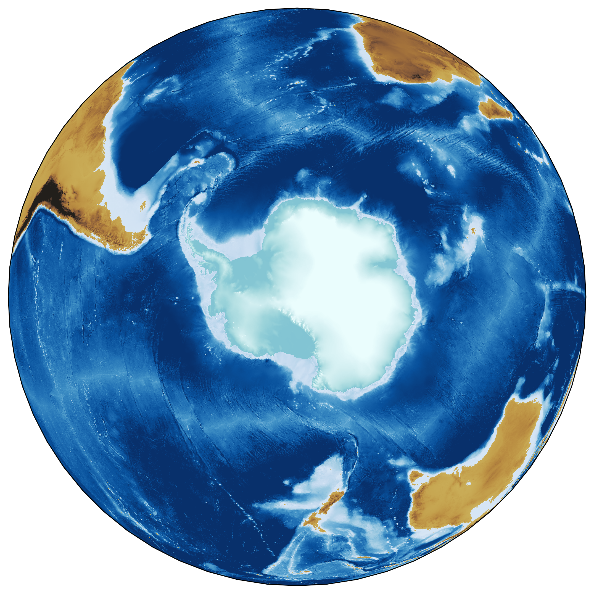
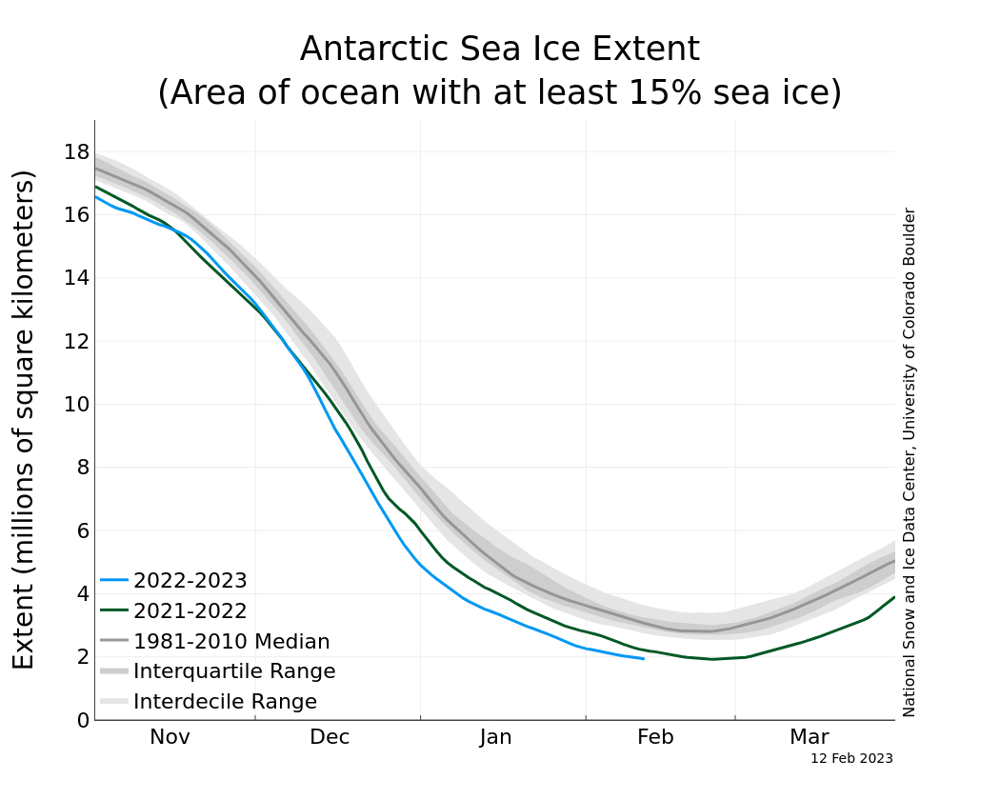

My Home Page; About; Shared under CC BY 4.0
This article was first published on 9 May 2026 in The Conversation
Authors: Aditya Narayanan, Alberto Naveira Garabato, Alessandro Silvano
For decades, Antarctica seemed to defy global warming. Since satellites began monitoring the poles in the late 1970s, the seasonal growth and retreat of Antarctic sea ice – frozen seawater that expands around the continent each winter – appeared remarkably resilient. It was often described as the “heartbeat of the planet”.
Unlike the Arctic, where sea ice declined rapidly as the planet warmed, Antarctic sea ice showed little overall loss. It even expanded between 2007 and 2015. But that resilience has now broken.
Since 2015, Antarctic sea ice has declined sharply. In 2023, winter sea ice extent fell to record lows — so far below the long-term average that scientists considered it an event with roughly a one-in-3.5-million probability of occurring by chance.
Antarctica was long considered a part of the climate system expected to change slowly. The speed of the recent sea ice decline has therefore come as a shock.
Scientists did expect Antarctic sea ice to shrink as the planet warmed, but not this quickly. The downturn over the past decade was not predicted by the climate models used to understand how the continent responds to warming. This makes the recent decline especially concerning: it suggests things may be unfolding faster, or in different ways, than our models can fully capture.
This matters because sea ice reflects sunlight back into space and helps drive ocean currents that lock away heat and carbon deep underwater. Its decline will have consequences for the climate and for Antarctica’s unique ecosystems that rely on it.
A Fundamental Shift
In our new scientific study, we show that the ocean around Antarctica has undergone a fundamental shift. Heat that had been trapped deep below the surface is now rising upwards, where it can melt sea ice.
The chain of events that triggered this change began decades ago. Around Antarctica, winds strengthened as a result of the ozone hole and greenhouse gas emissions. These stronger winds acted like a pump, gradually drawing warm, salty deep water closer to the surface.
For years, the sea around Antarctica – the Southern Ocean – was strongly layered, with cold fresh water sitting on top of warmer, saltier water below. That layering stopped the heat from reaching the surface.
But eventually the barrier weakened. By 2015, warmer deep water had risen close enough to the surface for storms and strong winds to churn it upwards.
The waters around Antarctica have since become trapped in a self-reinforcing cycle. Rising deep water brings heat and salt to the surface. The heat melts sea ice, while the extra salt makes the surface waters denser and easier to mix with warmer waters below. That allows even more heat to rise upwards, making it harder for new sea ice to form, and so on.
The consequences are not only physical. Antarctic sea ice supports one of the world’s most distinctive ecosystems. Algae grow on and under the ice, feeding krill, which in turn sustain penguins, seals, whales and seabirds. Low sea ice has already been linked to mass drowning of emperor penguin chicks – putting the entire species at risk. A long-term shift to lower sea ice cover would therefore reshape not only the climate itself, but also the living Southern Ocean.
This is not just a regional story. Antarctic sea ice acts like a mirror, reflecting sunlight and helping keep the planet cool. As it shrinks, more heat is absorbed by the ocean. At the same time, changes in the Southern Ocean circulation could reduce the ocean’s ability to store heat and carbon.
In the past, Antarctica helped buffer global warming. Our results suggest it may now be shifting in the opposite direction.
Whether this marks a permanent change remains uncertain. But if low sea ice conditions persist, the Southern Ocean could start to accelerate global warming rather than limit it.

© 2024 Aditya Narayanan. All rights reserved.This artwork uses color gradients to show the depth of the seabed, the height of the ice shelves over Antarctica, and the elevation of the bedrock over the other continents that are visible.
First published: 15th February, 2023
The polar regions are well known for their ice caps. In Antarctica, the land is covered in kilometers thick ice sheets, while the ocean surrounding the landmass freezes to form a large sea ice field extending to about 20 million kilometers every winter. Sea ice forms when the cold polar air freezes the surface seawater during winter. Sea ice is an important component of the Earth’s climate system. Ice is highly reflective, hence sheltering the seawater below from solar radiation. Ice rejects brine as it forms and makes the surrounding waters salty, hence making the polar regions very weakly stratified. This allows for efficient mixing of deep warm waters with cooler surface waters and is an important part of the global thermohaline circulation. Sea ice is a critical component of the planet’s climate and understanding how sea ice will respond to the changing climate is essential if we want to to accurately represent and forecast climate in our computer models.
Both the poles have seen summer sea ice declining over the last few years, with the Arctic having seen a decline for multiple decades. Sea ice extent during summer have fallen at about -8% per decade since the 1950s. The decline of sea ice around Antarctica began more recently, around the year 2016. February 2023 may break all records for the lowest sea ice extent in the Southern Ocean! This decline is mainly driven by the excess heat that we have put into the climate system by emitting greenhouse gases.

Unintuitive though it may be, the warming climate did not result in a reduction of sea ice in the Antarctic until 2016! In fact, sea ice concentration increased by about 12% in the period from 1979 – 2011. During the same period, the surface air has been warming over the Southern Ocean. The response of sea ice to a warming climate is quite complex as it is affected by the radiation in the atmosphere, the winds, the precipitation, the ocean currents, and the melting of glaciers along the coastline. Further, the overall trend of increasing sea ice hides regional differences. The West Antarctic seas saw a decline in sea ice over this period of time. But the increase in sea ice in other regions was larger, thus leading to an overall increasing trend.
The reasons are still a matter of scientific inquiry, but we have good candidate answers that can explain the trends we have seen this far. I will explain the current state of the science around this crucial question – why did the Southern Ocean sea ice field take so long to start melting under a warmer climate?
Before considering candidate answers to our question, we need to understand the factors that affect the sea ice field. Heat can come from above or from below. The atmosphere controls the radiative heat transfer to the ocean, the winds can carry heat away and also control the rate of evaporation, and finally precipitation also results in heat transfer. The winds push sea ice, and depending on the pattern of winds, sea ice can be bunched together or pushed apart. Coastal winds act to push sea ice away, making coastal regions a site of production and export of sea ice.
From below, the ocean circulation affects how heat moves around the global ocean. In the polar regions, surface waters are colder than waters at depth. If the deep water can make it to the surface, it can elevate the temperatures there. This upwelling of deep waters is controlled by the global thermohaline circulation – the large scale overturning of waters from the equator to the poles. Ocean currents and the westerly belt of winds control the upwelling of these deep waters (click here to see a video of deep waters spiralling upwards around Antarctica). Additionally, the surface stratification of the ocean controls the amount of upwelled waters that can mix with the surface waters. The amount of freshwater that flows into the ocean from melting glaciers and from atmospheric precipitation determine how strongly or weakly stratified the surface ocean is. Weaker surface stratification allows more of the warm deep water to mix with the surface, whereas, fresher waters are lighter and they tend to inhibit the mixing of upwelled deep waters.
Now that we understand that sea ice is found within a complex web of interactions between the atmosphere, ocean, and the cryosphere, we can start exploring the factors that led to sea ice growth from the 1970s to 2016, and the eventual decline since then.
One of the leading theories suggests that the ocean played a major role in our story. A study based on computer models was able to replicate the trends that satellites have observed and found that increasing air temperatures first acted to suppress sea ice growth. The amount of sea ice is determined by how much ice grows in a season versus how much is melted away. Increasing air temperatures slowed down the growth of sea ice. Sea ice does not retain much of the salt and tends to reject brine as it grows, thus dumping a lot of salt into the surface water. The suppression of sea ice growth freshened the surface waters. Fresher waters are more strongly stratified, losing their connection with the warmer waters that lie at depth. With lesser heat making it to the surface from the deep ocean, less heat was available to melt the sea ice. So we had a situation where sea ice growth slowed down due to warmer air temperatures, but the melting of sea ice due to warm water supply from deep below slowed down even more, hence leading to an overall buildup of sea ice!
But then, what led to the reduction in sea ice since the year 2016? Once again, our answer seems to lie with the warm deep waters. Deep waters rise to the surface in giant ocean gyres. Liping Zhang and their co-authors used computer simulations of the Earth’s climate to find that there was a buildup of heat in the subsurface ocean, largely due to stronger winds. Winds in the Southern Ocean are responsible for driving a vertical pump (Ekman pump) that pulls warm waters from deep below. They do this by pushing surface waters apart horizontally and creating a drop in height of the surface of the sea. The spinup of the winds drove a stronger vertical pump which led to the buildup of heat below the surface layer of the ocean. Warmer waters are lighter, making the subsurface light enough to eventually break the stratification which allowed greater mixing of warm waters with surface waters. This process may be the reason why sea ice reduced since 2016 in the Southern Ocean.
The question though is not yet settled! There are many changes occuring to the atmosphere, our climate, the cryosphere, the winds and the major gyre systems that we don’t fully understand. These uncertainties are some of the largest uncertainties in climate model simulations that inform the IPCC reports. It is becoming more and more clear to people across the world that our climate is undergoing rapid change, and governments would like more fine-grained forecasts of our future climate. Settling these uncertainties in the polar regions would go a long way in addressing that need!